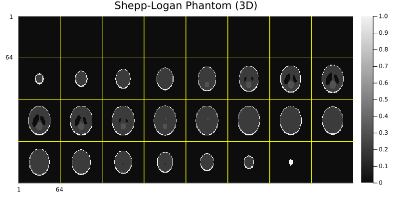
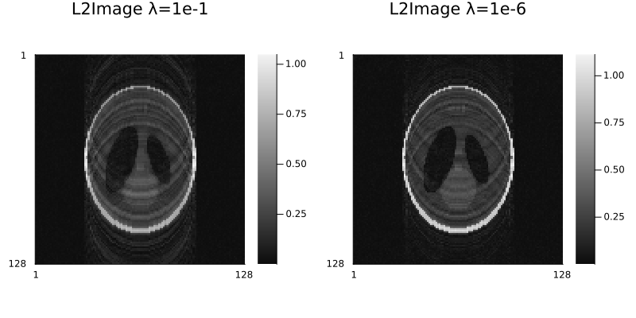
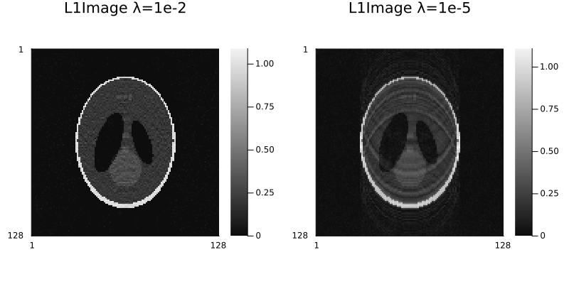
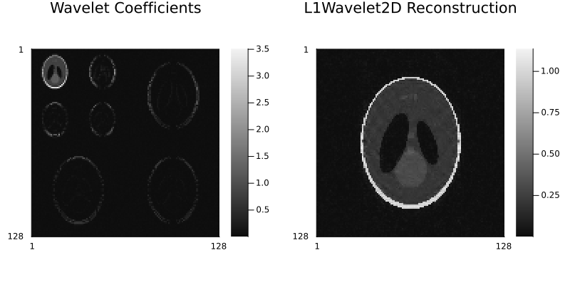
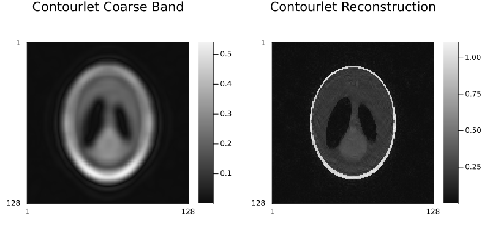
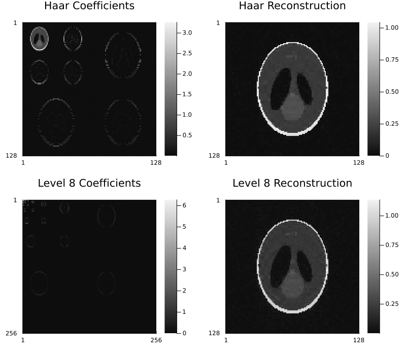
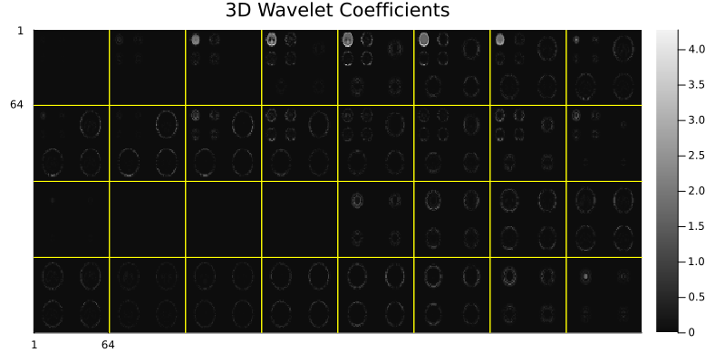
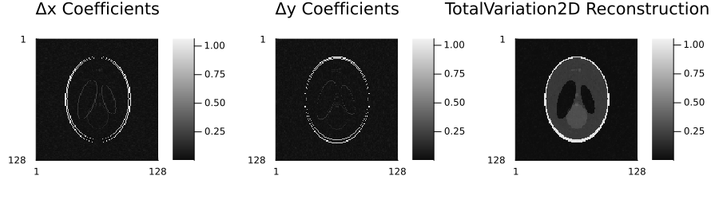
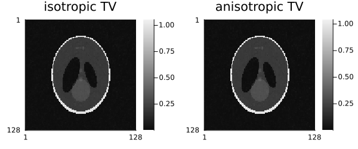

Regularization
Regularization is essential for reconstructing high-quality images from undersampled k-space data. This page explains the available regularization methods and how to use them.
Why Regularization?
When k-space is undersampled (as in compressed sensing or parallel imaging), the reconstruction problem becomes ill-posed - there are many possible images that could have produced the observed data. Regularization adds prior knowledge about what "good" images look like to guide the reconstruction toward a unique, high-quality solution.
Understanding the Math
For those interested in the mathematical details, the reconstruction solves:
minimize (1/2)‖E·x - y‖₂² + ∑ᵢ λᵢ·Rᵢ(x)Where:
Eis the encoding operator (Fourier + sensitivity + subsampling)xis the image to reconstructyis the observed k-space data‖E·x - y‖₂²is the data fidelity termRᵢ(x)are the regularization termsλᵢare the regularization parameters
The first term ensures the reconstruction is consistent with observed data. The regularization terms encode prior knowledge about image properties.
Available Regularization Methods
The code snippets in the following sections assume that Ristretto and MIRTjim are already imported. MIRTjim is a convenience wrapper around Plots.jl for displaying multidimensional images. Also, assume you have an AcquisitionInfo object acq representing your k-space data and acquisition settings for simulated Shepp-Logan phantom:
using Ristretto
using GeometricMedicalPhantoms
using MIRTjim: jim
using Ristretto: get_operator
# Simulate 2D acquisition
x = create_shepp_logan_phantom(128, 128, :axial; ti = MRISheppLoganIntensities(), eltype = ComplexF32)
x_noisy = x + 0.02f0 * randn(ComplexF32, 128, 128)
smaps = coil_sensitivities(128, 128, 8)
pdf = VariableDensitySampling(PolynomialDistribution(3), 4.0, 0.05)
pattern = create_sampling_pattern(pdf, (128, 128))
acq_full = AcquisitionInfo(
is3D=false,
image_size=(128, 128),
subsampling=pattern,
sensitivity_maps=smaps
)
data = simulate_acquisition(x_noisy, acq_full; inverse_crime_check = false, keep_sensitivity_maps = true)
# Simulate 3D acquisition
x3d = create_shepp_logan_phantom(64, 64, 32; ti = MRISheppLoganIntensities(), eltype = ComplexF32)
smaps3d = coil_sensitivities(64, 64, 32, 8)
subsampling3d = create_sampling_pattern(
VariableDensitySampling(PolynomialDistribution(3), 4.0, 0.05),
(64, 64, 32)
)
acq3d = AcquisitionInfo(
image_size=(64, 64, 32),
sensitivity_maps=smaps3d,
subsampling=subsampling3d,
)
data3d = simulate_acquisition(x3d, acq3d; inverse_crime_check = false, keep_sensitivity_maps = true)
jim(x3d; title="Shepp-Logan Phantom (3D)", size=(800,400))GKS: cannot open display - headless operation mode active
Image Domain Regularization
ℓ₂ Image Domain (Tikhonov) Regularization
The simplest form of regularization, penalizing large pixel values. L2Image is the canonical name; Tikhonov is an exported alias for the same type.
Ristretto.L2Image — Type
L2Image(λ)
Tikhonov(λ)Create an ℓ₂ image-domain regularization term with parameter λ.
The regularization term is given by λ²‖x‖₂², or ‖Γ .* x‖₂² if λ is an array Γ of the same size as x.
Tikhonov is an exported alias: Tikhonov regularization is the textbook name for this term, and it is the name most readers will reach for first. The two names are the same type.
Arguments
λ: Regularization parameter, can be a scalar or an array of the same size asx.
Notes
- This regularization term is also known as ridge regression, or (in BART's
-R Q) the ℓ₂-norm image-domain penalty. - The squared parameter
λ²is used in the formulation to align with common conventions in the Tikhonov regularization literature.
When to use:
- Noise reduction without strong assumptions about image structure
- As a baseline for comparison with other methods, especially for parallel imaging
- Fast and simple regularization (it is computationally cheap and can be optimized with Conjugate Gradient)
Example:
img₁ = reconstruct(data, IterativeReconstruction(L2Image(1e-1)); verbosity = Silent())
img₂ = reconstruct(data, IterativeReconstruction(L2Image(1e-6)); verbosity = Silent())
p1 = jim(img₁; title="L2Image λ=1e-1")
p2 = jim(img₂; title="L2Image λ=1e-6")
jim(p1, p2; layout=(1,2), size=(800,400))
L1 Regularization
Promotes sparse images (many pixels close to zero):
Ristretto.L1Image — Type
L1Image(λ)Create a L1 image regularization term with parameter λ. The regularization term is given by λ‖x‖₁, or ‖Γ .* x‖₁ if λ is an array Γ of the same size as x.
Arguments
λ: Regularization parameter, can be a scalar or an array of the same size asx.
When to use:
- Images that are naturally sparse (e.g., angiography) and you want to suppress small values
Example:
img₁ = reconstruct(data, IterativeReconstruction(L1Image(1e-2)); verbosity = Silent())
img₂ = reconstruct(data, IterativeReconstruction(L1Image(1e-5)); verbosity = Silent())
p1 = jim(img₁; title="L1Image λ=1e-2")
p2 = jim(img₂; title="L1Image λ=1e-5")
jim(p1, p2; layout=(1,2), size=(800,400))
Wavelet Domain Regularization
2D Wavelet Sparsity
Promotes sparsity in the wavelet domain:
Ristretto.L1Wavelet2D — Type
L1Wavelet2D(λ; wavelet=WT.db2, levels=2)Create a L1 wavelet regularization term for 2D images with parameter λ. The regularization term is given by λ‖𝒲x‖₁, where 𝒲 is the 2D wavelet transform operator. The wavelet and levels parameters control the type of wavelet and the number of decomposition levels used in the transform.
Arguments
λ: Regularization parameter, can be a scalar or an array of the same size asx.wavelet: (optional) Type of wavelet to use, specified as aWT.Wavelet. Default isWT.db2(Daubechies 2).levels: (optional) Number of decomposition levels in the wavelet transform. Default is2.
When to use:
- Natural images with structure at multiple scales
- Most MRI applications (anatomy has multi-scale features)
- Standard compressed sensing reconstruction
Parameters:
λ: Regularization strength (try 1e-3 to 1e-2)wavelet: Wavelet type (default: Daubechies, also try Haar, etc.)levels: Number of decomposition levels (default: 4)
Example:
reg = L1Wavelet2D(1e-3)
example_img = rand(ComplexF32, 128, 128)
op = get_operator(reg, example_img)
transformed = op * x_noisy
p1 = jim(transformed; title="Wavelet Coefficients")
img = reconstruct(data, IterativeReconstruction(reg); verbosity = Silent())
p2 = jim(img; title="L1Wavelet2D Reconstruction")
jim(p1, p2; layout=(1,2), size=(800,400))
Options for L1Wavelet2D:
wavelet: Specify wavelet type (e.g.,WT.haar,WT.db4)levels: Number of decomposition levels (default: 4)
reg_haar = L1Wavelet2D(1e-2; wavelet=WT.haar)
op_haar = get_operator(reg_haar, example_img)
transformed_haar = op_haar * x_noisy
img_haar = reconstruct(data, IterativeReconstruction(reg_haar); verbosity = Silent())
p1 = jim(transformed_haar; title="Haar Coefficients")
p2 = jim(img_haar; title="Haar Reconstruction")
reg_level8 = L1Wavelet2D(1e-3; levels=8)
op_level8 = get_operator(reg_level8, example_img)
transformed_level8 = op_level8 * x_noisy
img_level8 = reconstruct(data, IterativeReconstruction(reg_level8); verbosity = Silent())
p3 = jim(transformed_level8; title="Level 8 Coefficients")
p4 = jim(img_level8; title="Level 8 Reconstruction")
jim(p1, p2, p3, p4; layout=(2,2), size=(800,700))Contourlet Domain Regularization
Contourlet (NSCT) Sparsity
Promotes sparsity in the Nonsubsampled Contourlet Transform (NSCT) domain – unlike wavelets, contourlets capture directional/curve-like structure (edges, vessels) with fewer coefficients:
Ristretto.L1Contourlet — Type
L1Contourlet(λ; params=ContourletParams(J=3, L_array=parabolic_levels(3)))Create a L1 contourlet regularization term for images with parameter λ. The regularization term is given by λ‖𝒩x‖₁, where 𝒩 is the Nonsubsampled Contourlet Transform (NSCT) operator from ContourletOperators.jl, applied to the leading 2D image plane.
Despite the name, this wraps NSCTOp rather than the (nearly critically sampled) ContourletOp: the NSCT is shift-invariant, so every directional subband shares the input's spatial size, letting the bands stack into a single (dim_in..., n_bands) array (see StackedNSCTOp) instead of the ragged, differently-sized bands ContourletOp produces. That uniform stacking is also what lets images with dimensions beyond the leading 2D plane (e.g. a time or slice axis) be handled the same way as L1Wavelet2D: applying the transform independently to every 2D slice via AbstractOperators.BatchOp.
With the default biorthogonal filters, the NSCT is not self-adjoint/orthogonal: 𝒩' is the declared inverse transform, not the literal linear-algebra transpose (see the NSCTOp docstring). λ must therefore be a scalar, not a per-voxel array – the coefficient layout is n_bands times larger than the image, so there is no natural per-coefficient weight to align it with.
Arguments
λ: Regularization parameter (scalar).params: (optional)ContourletParamscontrolling pyramid levels/directions. DefaultContourletParams(J=3, L_array=parabolic_levels(3)).
When to use:
- Images dominated by directional edges or elongated structures (vasculature, fibrous tissue)
- As an alternative to
L1Wavelet2Dwhen wavelet's isotropic basis under-represents oriented features
Parameters:
λ: Regularization strength (scalar only, try 1e-3 to 1e-2)params:ContourletParamscontrolling pyramid levels/directions (default:J=3,parabolic_levels(3))
Example:
reg = L1Contourlet(1e-3)
op = get_operator(reg, example_img)
transformed = op * x_noisy
p1 = jim(transformed[:, :, 1]; title="Contourlet Coarse Band")
img = reconstruct(data, IterativeReconstruction(reg); verbosity = Silent())
p2 = jim(img; title="Contourlet Reconstruction")
jim(p1, p2; layout=(1,2), size=(800,400))

3D Wavelet Sparsity
For volumetric / multislice data, promotes sparsity in 3D wavelet domain:
Ristretto.L1Wavelet3D — Type
L1Wavelet3D(λ; wavelet=WT.db2, levels=2)Create a L1 wavelet regularization term for 3D images with parameter λ. The regularization term is given by λ‖𝒲x‖₁, where 𝒲 is the 3D wavelet transform operator. The wavelet and levels parameters control the type of wavelet and the number of decomposition levels used in the transform.
Arguments
λ: Regularization parameter, can be a scalar or an array of the same size asx.wavelet: (optional) Type of wavelet to use, specified as aWT.Wavelet. Default isWT.db2(Daubechies 2).levels: (optional) Number of decomposition levels in the wavelet transform. Default is2.
When to use:
- 3D acquisitions or multi-slice 2D data
- When you want to exploit 3D structure
Example:
reg3d = L1Wavelet3D(1e-3)
op = get_operator(reg3d, rand(ComplexF32, 64, 64, 32))
transformed = op * x3d
jim(abs.(transformed); title="3D Wavelet Coefficients", size=(800,400))
Total Variation
2D Total Variation
Promotes piecewise-constant images by penalizing rapid changes:
Ristretto.TotalVariation2D — Type
TotalVariation2D(λ)Create a Total Variation regularization term for 2D images with parameter λ. The regularization term is given by λ‖Δx‖_{2,1}, where Δ is the 2D finite difference operator computing gradients along the two spatial dimensions.
Arguments
λ: Regularization parameter, must be a scalar.
When to use:
- Images with sharp edges and flat regions
- Brain imaging with gray/white matter boundaries
- When you want strong edge preservation
Example:
reg = TotalVariation2D(1e-3)
op = get_operator(reg, example_img)
transformed = op * x_noisy
img = reconstruct(data, IterativeReconstruction(reg); verbosity = Silent())
p1 = jim(transformed[:,:,1]; title="Δx Coefficients")
p2 = jim(transformed[:,:,2]; title="Δy Coefficients")
p3 = jim(img; title="TotalVariation2D Reconstruction")
jim(p1, p2, p3; layout=(1, 3), size=(900,250))
Practical tip: TV can create a "cartoon-like" appearance. Use lower λ values (1e-4 to 5e-3) to preserve texture.
3D Total Variation
For volumetric / multislice data, promotes piecewise-constant structure in 3D:
Ristretto.TotalVariation3D — Type
TotalVariation3D(λ)Create a Total Variation regularization term for 3D images with parameter λ. The regularization term is given by λ‖Δx‖_{2,1}, where Δ is the 3D finite difference operator computing gradients along the three spatial dimensions.
Arguments
λ: Regularization parameter, must be a scalar.
Anisotropic Total Variation
The same finite differences, summed with an ℓ₁ norm instead of the isotropic ℓ₂,₁ mixed norm — the directional derivatives are penalized independently rather than as a gradient vector per pixel:
Ristretto.AnisotropicTotalVariation2D — Type
AnisotropicTotalVariation2D(λ)Create an anisotropic Total Variation regularization term for 2D images with parameter λ. The regularization term is λ‖Δx‖_1 = λ(‖Δˣx‖_1 + ‖Δʸx‖_1), the sum of the absolute finite differences along each spatial dimension separately.
Unlike TotalVariation2D, which sums the ℓ₂ norm of the gradient vector at each pixel, this term treats the directional derivatives independently. The penalty is therefore separable, so its proximal map is plain soft thresholding of the difference coefficients — cheaper, and usable by a proximal-gradient algorithm. The price is that the penalty is no longer rotation invariant: it is smallest for edges aligned with the sampling grid, so it favours horizontal and vertical structure and can leave a faint blocky, axis-aligned texture on diagonal edges.
Arguments
λ: Regularization parameter, must be a scalar.
Ristretto.AnisotropicTotalVariation3D — Type
AnisotropicTotalVariation3D(λ)Create an anisotropic Total Variation regularization term for 3D images with parameter λ: the regularization term is λ(‖Δˣx‖_1 + ‖Δʸx‖_1 + ‖Δᶻx‖_1). See AnisotropicTotalVariation2D for how it differs from the isotropic TotalVariation3D.
Arguments
λ: Regularization parameter, must be a scalar.
When to use:
- Structure that is genuinely axis-aligned (phantoms, grids, rectangular hardware)
- When the separable prox matters: it is plain soft thresholding of the difference coefficients
The trade-off: the penalty is not rotation invariant. It is cheapest for horizontal and vertical edges, so diagonal boundaries can pick up a faint staircase texture that TotalVariation2D does not produce. Isotropic TV remains the default for anatomy.
img_aniso = reconstruct(data, IterativeReconstruction(AnisotropicTotalVariation2D(1e-3)); verbosity = Silent())
img_iso = reconstruct(data, IterativeReconstruction(TotalVariation2D(1e-3)); verbosity = Silent())
jim(
jim(img_iso; title="isotropic TV"),
jim(img_aniso; title="anisotropic TV");
layout=(1, 2), size=(600,250)
)
Second-Order Total Variation
Penalizes the second derivatives instead of the first, so a smooth intensity ramp costs nothing:
Ristretto.SecondOrderTotalVariation2D — Type
SecondOrderTotalVariation2D(λ)Create a second-order Total Variation regularization term for 2D images with parameter λ: λ‖∇²x‖_{2,1} = λ ∑_voxels ‖(∂ₓₓx, ∂ₓᵧx, ∂ᵧₓx, ∂ᵧᵧx)‖₂, where the four second derivatives are obtained by applying the finite-difference gradient twice.
Arguments
λ: Regularization parameter, must be a scalar.
Notes
- First-order TV (
TotalVariation2D) penalizes any deviation from a piecewise constant image and therefore produces staircasing on smooth intensity ramps — a well known artifact on, e.g., coil-shading or slow tissue transitions. Second-order TV penalizes deviations from a piecewise linear image instead, so ramps cost nothing and staircasing disappears; the price is that genuine edges are blurred more than by first-order TV, because a jump is now penalized through its (large) second derivative. - In practice second-order TV is rarely used alone. Combining it with first-order TV, either as a plain sum or as the infimal convolution of the two (see the Infimal convolution TV section of the regularization documentation), keeps the edge preservation of first-order TV and the ramp fidelity of the second-order term; that combination is also the motivation behind total generalized variation. See Chambolle & Lions, Image recovery via total variation minimization and related problems, Numer Math 1997, and Bredies, Kunisch & Pock, Total generalized variation, SIAM J Imaging Sci 2010.
- Dimensions beyond the first two are treated as batch dimensions: each 2D slice is regularized independently.
Ristretto.SecondOrderTotalVariation3D — Type
SecondOrderTotalVariation3D(λ)Create a second-order Total Variation regularization term for 3D images with parameter λ: λ‖∇²x‖_{2,1}, the sum over voxels of the Euclidean norm of the nine second derivatives along the three spatial dimensions. See SecondOrderTotalVariation2D for when to prefer second-order TV over first-order TV.
Arguments
λ: Regularization parameter, must be a scalar.
When to use:
- Images dominated by smooth intensity variation (coil shading, slow tissue transitions, B1 inhomogeneity), where first-order TV produces staircasing — flat plateaus separated by artificial steps
- Almost always in combination with a first-order term rather than alone, since a jump is penalized through its (large) second derivative and is therefore blurred
Example:
# first-order TV for the edges, second-order for the ramps
img = reconstruct(acq, IterativeReconstruction(TotalVariation2D(1e-3), SecondOrderTotalVariation2D(2e-3)))Practical tip: If you find yourself tuning the balance between first- and second-order TV, use TotalGeneralizedVariation2D instead: it makes the same trade-off adaptively, per voxel.
Total Generalized Variation
Balances first- and second-order behaviour automatically through an auxiliary vector field:
Ristretto.TotalGeneralizedVariation2D — Type
TotalGeneralizedVariation2D(λ; ratio=2.0)
TotalGeneralizedVariation3D(λ; ratio=2.0)Create a second-order total generalized variation (TGV²) regularization term for 2D (resp. 3D) images:
TGV(x) = min_w λ‖∇x − w‖₂,₁ + λ ⋅ ratio ⋅ ‖ℰw‖₂,₁where w is an auxiliary vector field and ℰw = ½(∇w + ∇wᵀ) is its symmetrized gradient. The minimization over w is not carried out separately: w becomes a variable of the reconstruction problem and is solved for jointly with the image (see materialize_with_auxiliaries).
Arguments
λ: Regularization parameter, must be a scalar.ratio: (optional) Weight of the second-order term relative to the first, i.e.α₀/α₁in the usual notation. The value2.0recommended by Knoll et al. is the default and works well across a wide range of images; the result is not very sensitive to it.
Notes
- TGV is the standard answer to the staircasing artifact of total variation. Where
TotalVariation2Dforces the image towards piecewise constant andSecondOrderTotalVariation2Dforces it towards piecewise linear (blurring genuine edges), TGV balances the two automatically:wtakes over the smooth part of the gradient, so∇x − wstays small on ramps, while at an edgewcannot follow the jump and the first-order term acts exactly as TV does. It preserves edges and reproduces smooth intensity variation. Introduced by Bredies, Kunisch & Pock, Total generalized variation, SIAM J Imaging Sci 2010, and brought to MRI by Knoll, Bredies, Pock & Stollberger, Second order total generalized variation (TGV) for MRI, Magn Reson Med 2011. - As
ratio → ∞the auxiliary field is driven to a constant and TGV degenerates to plain total variation, so TV is a limiting case rather than a different model. - The auxiliary field adds one vector per voxel, which is the price of the improved model: its memory cost is
N × length(image)for anN-dimensional term. The symmetrized gradient hasN(N+1)/2independent components (3 in 2D, 6 in 3D). - Only splitting algorithms handle the coupled two-variable term set: use
ADMM. The first-order term couples the two variables through∇x − w, which the proximal-gradient algorithms cannot separate. Convergence is sensitive to ADMM's penalty parameter on this term; if the adaptive default does not settle, pass a fixedrho(ADMM(rho = 1.0)is what the tests here use). - Dimensions beyond the spatial ones are batch dimensions, regularized independently.
Ristretto.TotalGeneralizedVariation3D — Type
TotalGeneralizedVariation3D(λ; ratio=2.0)The 3D member of the TGV family: identical to TotalGeneralizedVariation2D except that the gradient, the auxiliary field and the symmetrized gradient run over three spatial dimensions instead of two, so w has three components per voxel and ℰw has six. See TotalGeneralizedVariation2D for the model, the arguments and the solver requirements.
When to use:
- The default replacement for
TotalVariation2Dwhenever staircasing is a concern, i.e. on any image that is not genuinely piecewise constant — which in MRI is most of them - Especially worthwhile at high acceleration, where the TV staircasing artifact is strongest
- Use
TotalGeneralizedVariation3Dfor volumetric data, so that the auxiliary field and the symmetrized gradient run over all three spatial dimensions instead of treating slices independently
Example:
img = reconstruct(acq, IterativeReconstruction(TotalGeneralizedVariation2D(1e-3); algorithm = ADMM(), maxit = 500))Practical tip: TGV requires ADMM — the auxiliary field is coupled to the image through ∇x − w, which the proximal-gradient algorithms cannot separate. It also doubles the number of unknowns, so expect roughly twice the memory and a modest increase in cost per iteration. ratio rarely needs changing from its default of 2.0; increasing it makes the result approach plain TV.
Infimal-Convolution Total Variation
The infimal convolution of first- and second-order TV needs no regularization type of its own: it is an image decomposition into a piecewise-constant "cartoon" part and a piecewise-linear "ramp" part, which the Image Decomposition machinery already expresses.
components = (
Component(:cartoon, TotalVariation2D(1e-3)),
Component(:ramp, SecondOrderTotalVariation2D(1e-3)),
)
img = reconstruct(acq, IterativeReconstruction(components...; algorithm = ADMM(), maxit = 500))
img.cartoon # the edges, shorthand for img.components.cartoon
img.ramp # the smooth background, shorthand for img.components.rampCompared to TotalGeneralizedVariation2D this is the older and slightly weaker model — the two parts are separated globally rather than adaptively per voxel — but it has the advantage that the separated components are themselves available, which is useful when the smooth part is the bias field or the background.
Edge-Preserving Roughness (Huber)
A smooth interpolation between a quadratic roughness penalty and total variation:
Ristretto.EdgePreservingRoughness2D — Type
EdgePreservingRoughness2D(λ; δ=0.01)Create an edge-preserving roughness penalty for 2D images: λ ∑_voxels ∑_d ψ_δ(∂_d x), where ψ_δ is the Huber potential
ψ_δ(t) = t²/(2δ) if |t| ≤ δ
ψ_δ(t) = |t| − δ/2 otherwise,applied to every first-order finite difference along the two spatial dimensions.
Arguments
λ: Regularization parameter, must be a scalar.δ: (optional) Width of the quadratic region, i.e. the gradient magnitude above which a difference counts as an edge. Should be set relative to the image intensity scale — a good starting point is a small percentile of the gradient magnitudes of a preliminary reconstruction. Default0.01.
Notes
- This is the classical edge-preserving roughness penalty of statistical image reconstruction (Fessler, Statistical image reconstruction methods for transmission tomography, Handbook of Medical Imaging 2000; Charbonnier et al., Deterministic edge-preserving regularization in computed imaging, IEEE TIP 1997). It interpolates between the two terms this package already offers: as
δ → ∞it approachesλ/(2δ)‖∇x‖², a quadratic roughness penalty in the spirit ofL2Image, and asδ → 0it approaches the anisotropic total variationλ‖∇x‖₁. Small differences are therefore penalized quadratically (which suppresses noise without the amplitude bias of an ℓ₁ term) while large ones are penalized only linearly (which preserves edges). - Unlike
TotalVariation2D, the penalty is differentiable everywhere, so gradient-based algorithms can use it directly instead of taking a proximal step. That also means it does not produce the exactly piecewise-constant, staircased solutions of TV. - The Huber potential is applied to each directional difference separately (an anisotropic penalty), matching the usual formulation of roughness penalties;
TotalVariation2Dinstead couples the directions through a per-voxel ℓ₂ norm.
Ristretto.EdgePreservingRoughness3D — Type
EdgePreservingRoughness3D(λ; δ=0.01)Create an edge-preserving roughness penalty for 3D images: the Huber potential applied to every first-order finite difference along the three spatial dimensions. See EdgePreservingRoughness2D for details.
When to use:
- When TV's piecewise-constant bias is unwanted but a quadratic penalty over-smooths edges
- With gradient-based algorithms: the penalty is differentiable everywhere, so it needs no proximal step
- Statistical / model-based reconstruction, where this is the classical choice of potential function
Example:
img = reconstruct(acq, IterativeReconstruction(EdgePreservingRoughness2D(1e-3; δ = 0.01)))Practical tip: δ is an absolute intensity, so it must be set relative to the image scale. A workable recipe is to take a preliminary reconstruction, compute the magnitudes of its finite differences, and use a low percentile (5–20%) of those as δ: differences below that count as noise and are smoothed quadratically, those above count as edges and are preserved.
Temporal Regularization
Temporal Fourier Sparsity
For dynamic imaging, promotes sparsity in the temporal Fourier domain:
Ristretto.L1TemporalFourier — Type
L1TemporalFourier(λ; time_dim=nothing)Create a temporal Fourier regularization term with parameter λ. The regularization term is given by λ‖𝓕ₜ{x}‖₁, where 𝓕ₜ is the discrete Fourier transform along the temporal dimension specified by time_dim. If time_dim is not provided, it will be inferred as the dimension named :time if x is a NamedDimsArray.
Arguments
λ: Regularization parameter, can be a scalar or an array of the same size asx.time_dim: (optional) Dimension along which to apply the Fourier transform. Can be anInteger(1-based index)
or a Symbol (dimension name). If not provided, it will be inferred as the dimension named :time if x is a NamedDimsArray.
When to use:
- Dynamic or cine imaging
- Cardiac MRI
- DCE-MRI (dynamic contrast enhanced)
- When motion is periodic or smoothly varying
Example:
img = reconstruct(acq, IterativeReconstruction(L1TemporalFourier(1e-2, time_dim=4)))Practical tip: This works best when temporal changes are smooth or periodic. For irregular motion, consider temporal total variation or low-rank methods instead.
Temporal Total Variation
For dynamic imaging with irregular or non-periodic motion, penalizes the frame-to-frame differences:
Ristretto.TemporalTotalVariation — Type
TemporalTotalVariation(λ; time_dim=nothing)Create a temporal total variation regularization term with parameter λ. The regularization term is given by λ‖δₜx‖₁, where δₜ is the forward finite difference operator along the temporal dimension specified by time_dim. If time_dim is not provided, it will be inferred as the dimension named :time if x is a NamedDimsArray.
Arguments
λ: Regularization parameter, can be a scalar or an array matching the size ofδₜx(i.e. the size ofxwith the temporal dimension reduced by one).time_dim: (optional) Dimension along which to take the differences. Can be anInteger(1-based index)
or a Symbol (dimension name). If not provided, it will be inferred as the dimension named :time if x is a NamedDimsArray.
Notes
- This is the anisotropic (ℓ₁) temporal TV used in the compressed-sensing dynamic MRI literature (e.g. Feng et al., Golden-angle radial sparse parallel MRI, Magn Reson Med 2014). Unlike
L1TemporalFourierit does not assume periodic or smooth temporal dynamics, so it copes better with irregular motion; unlikeLowRankit makes no assumption about the number of temporal basis functions. - It is frequently combined with
LowRank(the "L+S"-style models, seeComponent) or with spatial regularizers such asTotalVariation2D.
When to use:
- Free-breathing and real-time acquisitions, where the temporal Fourier assumption of periodicity fails
- Contrast dynamics that are piecewise smooth in time (DCE-MRI, first-pass perfusion)
- As the sparse part of an L+S model (see Image Decomposition)
Example:
img = reconstruct(acq_dynamic, IterativeReconstruction(TemporalTotalVariation(2e-2; time_dim = 3)))Practical tip: Like spatial TV, this term uses a non-tight operator, so reconstruction falls back to ADMM. It is the temporal counterpart of TotalVariation2D and is often combined with it ((TotalVariation2D(1e-3), TemporalTotalVariation(2e-2))) — the "spatiotemporal TV" of the golden-angle radial sparse parallel (GRASP) literature.
Low-Rank Regularization
Nuclear Norm
Promotes low-rank structure in dynamic data:
Ristretto.LowRank — Type
LowRank(λ; time_dim=nothing)Create a low-rank regularization term with parameter λ. The regularization term is given by λ‖𝓧‖_*, where 𝓧 is the Casorati matrix formed by unfolding the input variable x along the temporal dimension specified by time_dim. If time_dim is not provided, it will be inferred as the dimension named :time if x is a NamedDimsArray.
Arguments
λ: Regularization parameter, can be a scalar or an array of the same size asx.time_dim: (optional) Dimension along which to form the Casorati matrix. Can be anInteger(1-based index)
or a Symbol (dimension name). If not provided, it will be inferred as the dimension named :time if x is a NamedDimsArray.
Notes:
- The nuclear norm
‖𝓧‖_*is the sum of the singular values of the matrix𝓧. - The Casorati matrix is formed by reshaping
xsuch that the specifiedtime_dimbecomes the second dimension,
and all other dimensions before it are reshaped into columns (first dimension), while dimensions after it are treated as batch dimensions.
Ristretto.RankLimit — Type
RankLimit(max_rank; time_dim=nothing)Create a rank limit regularization term that constrains the rank of the Casorati matrix formed by unfolding the input variable x along the temporal dimension specified by time_dim. The rank of the Casorati matrix will be limited to max_rank. If time_dim is not provided, it will be inferred as the dimension named :time if x is a NamedDimsArray.
Arguments
max_rank: Maximum allowed rank for the Casorati matrix.time_dim: (optional) Dimension along which to form the Casorati matrix. Can be anInteger(1-based index)
or a Symbol (dimension name). If not provided, it will be inferred as the dimension named :time if x is a NamedDimsArray.
Notes:
- The nuclear norm
‖𝓧‖_*is the sum of the singular values of the matrix𝓧. - The Casorati matrix is formed by reshaping
xsuch that the specifiedtime_dimbecomes the second dimension,
and all other dimensions before it are reshaped into columns (first dimension), while dimensions after it are treated as batch dimensions.
When to use:
- Dynamic imaging with temporal correlations
- Background suppression in DCE-MRI
- Data with strong spatiotemporal correlations
- When images share common features across time
Example:
# Dynamic series with low-rank structure
img = reconstruct(acq_dynamic, IterativeReconstruction(LowRank(1e-1)))Practical tip: Low-rank methods can be computationally expensive. Use for datasets where temporal correlations are strong.
Locally Low Rank
Instead of one Casorati matrix for the whole image, penalizes the nuclear norm of every spatial block separately:
Ristretto.LocallyLowRank — Type
LocallyLowRank(λ; block_size, time_dim=nothing, shift=:none, rng=Random.default_rng())
LLR(λ; block_size, time_dim=nothing, shift=:none, rng=Random.default_rng())Create a locally low-rank (LLR) regularization term with parameter λ. LLR is an exported alias: BART, RegularizedLeastSquares.jl and the literature all use the acronym, and the two names are the same type. The image is tiled into non-overlapping spatial blocks, and the nuclear norm of the Casorati matrix of every block is penalized: λ ∑_b ‖𝓧_b‖_*, where the rows of 𝓧_b are the voxels of block b and its columns are the frames along time_dim.
Arguments
λ: Regularization parameter, must be a scalar.block_size: Edge length of the blocks. Either anInteger(same length in every spatial dimension) or a tuple with one entry per spatial dimension (the dimensions beforetime_dim). Typical values are 4-16.time_dim: (optional) Dimension holding the frames / contrasts. Can be anInteger(1-based index) or aSymbol(dimension name). If not provided, it will be inferred as the dimension named:timeifxis aNamedDimsArray.shift: (optional) Where the tiling grid starts.:none(default) anchors it at the first voxel,:fixeddraws one random origin when the term is materialized, and:randomdraws a new origin before every proximal evaluation. See the notes on block artifacts below.rng: (optional) Random number generator used to draw the grid origin forshift in (:fixed, :random).
Notes
- LLR exploits that a local neighbourhood has far fewer independent temporal dynamics than the whole image, so it is a strictly stronger prior than the globally low-rank
LowRankwhenever the dynamics vary across the field of view. Introduced for dynamic MRI and parameter mapping by Trzasko & Manduca, Local versus global low-rank promotion in dynamic MRI series reconstruction, ISMRM 2011, and Zhang, Pauly & Levesque, Accelerating parameter mapping with a locally low rank constraint, Magn Reson Med 2015. - The prox is exact: since the blocks tile the image without overlap, the block decomposition is a permutation of the voxels and the proximal operator decouples into one singular value thresholding per block. This stays true for a shifted grid, which wraps around the image and is therefore still a permutation — but only when every spatial extent is divisible by the block edge, which is checked.
- A single fixed grid can leave visible block artifacts at the block boundaries. The usual remedy in the literature is to shift the grid randomly between iterations (
shift=:random), which averages the artifacts out. That makes the objective change from iteration to iteration, so it is no longer the same optimization problem at every step: use it only withISTA,FISTAorADMM. Line-search algorithms (PANOC,PANOCplus,ZeroFPR) compare objective values across iterations and can stall or fail on a moving objective.shift=:fixedkeeps a single grid — the objective stays stationary and every algorithm remains valid — but merely moves the artifacts instead of removing them; it is mostly useful for averaging over independent runs. - Cost is dominated by one SVD of a
(∏ block_size) × n_framesmatrix per block and iteration, so small blocks are cheaper but capture less spatial correlation.
When to use:
- Dynamic series where the temporal dynamics differ across the field of view (cardiac motion vs. static background, focal contrast uptake) — a global low-rank model needs a high rank to represent all of them at once, a local one does not
- Quantitative parameter mapping (T1/T2 relaxometry, MR fingerprinting), where each voxel neighbourhood follows a low-dimensional signal model
Example:
img = reconstruct(acq_dynamic, IterativeReconstruction(LocallyLowRank(5e-2; block_size = 8, time_dim = 3)))Practical tip: block_size trades locality against cost and stability: 4-8 voxels for strongly varying dynamics, 12-16 when the temporal signal is smooth over larger regions. Each iteration performs one SVD of a (∏ block_size) × n_frames matrix per block. A single fixed block grid can leave visible block boundaries at large λ; pass shift = :random to redraw the grid before every proximal step, which averages them out (see below).
Shifting the Block Grid
LocallyLowRank accepts a shift argument controlling where the tiling grid starts:
shift | Grid | Objective | Use with |
|---|---|---|---|
:none (default) | fixed at the first voxel | stationary | any algorithm |
:fixed | one random origin, drawn once | stationary | any algorithm |
:random | redrawn before every prox | changes per iteration | ISTA, FISTA, ADMM only |
:random is the standard remedy for block artifacts in the literature. The grid wraps circularly, so the tiling remains a permutation of the voxels and the prox stays exact — but only when every spatial extent is divisible by the block edge, which is checked. Because the objective is no longer the same function at every iteration, the line-search algorithms (PANOC, PANOCplus, ZeroFPR) must not be used with it.
img = reconstruct(acq_dynamic, IterativeReconstruction(LocallyLowRank(5e-2; block_size = 8, time_dim = 3, shift = :random); algorithm = FISTA()))Multi-Scale Low Rank
Penalizes the same block-wise nuclear norm at several block sizes at once:
Ristretto.MultiScaleLowRank — Type
MultiScaleLowRank(λ; block_sizes, time_dim=nothing, weights=nothing, shift=:none, rng=Random.default_rng())Create a multi-scale locally low-rank regularization term: the same block-wise nuclear norm as LocallyLowRank, but evaluated over several block sizes at once so that both fine, localized dynamics and large, globally correlated dynamics are penalized by the same term.
Arguments
λ: Regularization parameter: a scalar (the same threshold at every scale) or a vector with one entry per scale (block_sizes).λandweightsare not interchangeable:λⱼis the nuclear-norm threshold of scalej's block-decomposed term, whileweightsis the convex combination the proximal average takes across scales (see Notes) – scaling one does not have the same effect as scaling the other. Use a per-scaleλto give coarse/fine scales different thresholds directly; useweightsto bias the average toward one scale while keeping every scale's own threshold equal.block_sizes: Collection of block edge lengths, one entry per scale. Each entry is either anInteger(same edge in every spatial dimension) or a tuple with one entry per spatial dimension. A geometric progression such as(4, 8, 16)is the usual choice.time_dim: (optional) Dimension holding the frames / contrasts, as forLocallyLowRank.weights: (optional) Convex weights of the scales; defaults to uniform. Must be non-negative and sum to 1.shift,rng: (optional) Grid-shift policy, as forLocallyLowRank. Applied to every scale.
Notes
- Multi-scale low-rank modelling of dynamic images was introduced by Ong & Lustig, Beyond low rank + sparse: Multiscale low rank matrix decomposition, IEEE J Sel Top Signal Process 2016, and is available in BART as
-R M. Their formulation decomposes the image into one separate component per scale (x = ∑_j x_j, eachx_jpenalized at its own block size), which is an exact model with an exact prox per component; that formulation is expressible directly with this package's image decomposition — oneComponentper scale, each carrying aLocallyLowRank— and is the better choice when the separated components are themselves of interest. - This term instead penalizes a single image at several scales at once, which has no closed-form proximal operator, so it uses the proximal average of the per-scale block nuclear norms (see
ProximalAverage). This is an approximation of the sum of the per-scale penalties, not the sum itself: the reported objective value is the weighted average of the per-scale penalties and the minimizer is that of the proximal average. Prefer it when one regularized image (not a decomposition) is wanted. - With a single entry in
block_sizesand weight 1, the term reduces exactly toLocallyLowRank. - Cost is the sum of the per-scale costs: one SVD per block per scale and iteration.
When to use:
- Dynamic series containing both large, globally correlated dynamics (respiratory motion of the whole field of view) and small, localized ones (focal contrast uptake), where no single
block_sizeis right for both - As a less sensitive alternative to tuning
block_sizeforLocallyLowRank
Example:
img = reconstruct(acq_dynamic, IterativeReconstruction(MultiScaleLowRank(5e-2; block_sizes = (4, 8, 16), time_dim = 3)))Practical tip: The term uses the proximal average of the per-scale penalties, which approximates their sum; the objective value it reports is the weighted average of the per-scale penalties. If you want the exact multi-scale model of Ong & Lustig — one separate image component per scale — build it from components instead, which also gives you the separated scales:
components = Tuple(
Component(Symbol(:scale, b), LocallyLowRank(5e-2; block_size = b, time_dim = 3)) for b in (4, 8, 16)
)Cost grows linearly with the number of scales, so two or three are usually enough.
λ may also be a vector with one entry per scale, giving coarse and fine scales independent thresholds instead of the single value applied everywhere:
MultiScaleLowRank([2e-2, 5e-2, 1e-1]; block_sizes = (4, 8, 16), time_dim = 3)This is a different knob from weights: λⱼ is scale j's own nuclear-norm threshold, while weights is the convex combination the proximal average takes across the (already-thresholded) scales. Doubling weights[j] changes how much scale j's penalty counts toward the reported average; doubling λⱼ changes what scale j's prox actually shrinks toward.
Structured Low Rank k-Space (SAKE / LORAKS-C)
Promotes low rank of the block-Hankel matrix built from sliding windows over multi-coil k-space, with the coils stacked as extra columns. This is a calibrationless parallel-imaging prior: it recovers the missing samples of an undersampled multi-coil acquisition without sensitivity maps and without an ACS-calibrated kernel. The structure it exploits is the same linear predictability GRAPPA and SPIRiT use, except that it is estimated from the undersampled data itself.
Ristretto.StructuredLowRank — Type
StructuredLowRank(; λ=nothing, max_rank=nothing, window, structure=:c, weights=nothing, batch_dims=nothing, kspace_center=nothing)Calibrationless structured low-rank k-space regularization — the SAKE / LORAKS-C / ALOHA family. Exactly one of λ or max_rank must be given.
The multi-channel k-space variable is lifted into a block-Hankel matrix built from every sliding window of size window over the k-space encoding dimensions, with the coil axis stacked as extra columns (the "SAKE" layout), and low rank of that matrix is promoted. That matrix is low-rank because the coil images obey linear-predictability relations in k-space — which is the same structure GRAPPA and SPIRiT exploit, except that here it is estimated from the undersampled data itself rather than from a calibration region. No sensitivity maps and no ACS lines are needed.
Arguments
λ: penalty form. The term isλ ⋅ ‖𝓗 k‖_*, the nuclear norm of the lifted matrix. This is the convex relaxation used by LORAKS-C.max_rank: constraint form. The lifted matrix is required to have rank at mostmax_rank. This is SAKE's hard rank constraint, imposed by a Cadzow truncation step.window: sliding-window size over the k-space encoding dims, a 2- or 3-tuple. Typically(5, 5)or(6, 6)in 2D and(4, 4, 4)in 3D.structure: which LORAKS matrix is lifted and low-ranked.:c(the default) — the plain block-Hankel (C) matrix. Low rank when the image has limited spatial support, and, with several channels, through the coil relations above. This is the SAKE / LORAKS-C / ALOHA structure and the only oneweightsapplies to.:s— the LORAKS S-matrix,S ∈ ℝ^(2K × 2NᵣL), which reads k-space on both sides of DC and is low rank when the image phase is smoothly varying (lower still when the support is also limited). This is the phase constraint P-LORAKS carries; it needs no phase calibration.:g— the LORAKS G-matrix, the other phase construction of Haldar (2014). Deliberately offered as the weaker sibling of:s: the paper's own analysis is thatGis rank-deficient but not necessarily low rank unless the image support is limited too, so prefer:sunless you are reproducing G-matrix results.
:sand:gmatrices are real by construction, so their prox runs a real SVD of a matrix with twice the rows and columns of the C matrix. Measured on a 64²×8 slab with a(5, 5)window: 76 ms for:cagainst 209 ms (:s) and 212 ms (:g) per proximal call, i.e. 2.7-2.8×. The internalLoraksLift's docstring carries the exact constructions.kspace_center: (optional) the array index of the DC sample per k-space encoding dimension, used bystructure = :sand:gto reflect k-space about DC. Defaults to Ristretto's centered convention,N ÷ 2 + 1per dimension — pass the true center when DC sits elsewhere (an acquisition withshifted_kspace_dims, where DC is at index 1). Ignored bystructure = :c.weights: (optional) ALOHA's transform-domain weighting, forstructure = :conly.nothing(the default) is plain SAKE / LORAKS-C. Otherwise the lift is applied tow ⊙ kfor each weightw, and several weights are combined by aProximalAveragethe wayMultiScaleLowRankcombines its scales. Accepts::tv— one first-difference weight per k-space encoding dimension, the annihilating filter implied by a piecewise-constant (total-variation-sparse) image.:wavelet— the pyramidal form: the same first differences taken at step 1 and step 2, per dimension (the Haar detail bands of the first two scales), giving2 * length(window)terms.- an array on the k-space encoding grid — a custom weight.
- a tuple or vector of such arrays — a custom pyramid.
N ÷ 2 + 1); pass an explicit array when the DC sits elsewhere (shifted_kspace_dims).batch_dims: (optional) dimension name(s) solved independently (e.g.:time); they are not coupled by the Hankel embedding. Matching is by name, so this only has an effect when the image is aNamedDimsArray.
rank(𝓗 k) ≤ r (SAKE) is a projection onto a non-convex set, and the projection is applied to the lifted matrix rather than to k itself. Any splitting algorithm applied to it — ADMM, DouglasRachford — is therefore a heuristic with no convergence guarantee: it may converge to a non-global fixed point or not converge at all, and the result depends on the initial estimate. This mirrors the original Cadzow-style alternating-projection algorithm of Shin et al. (2014). The λ form (LORAKS-C) is convex.
Notes
λandmax_rankare mutually exclusive; passing both, or neither, is anArgumentError(the same penalty/constraint pairing asL0Image,NAMING.mdrule 1.3).- The optimization variable is the full multi-channel k-space, so pair the term with
signal_model = KSpaceToImage(...), the waySPIRiT(; iterative = true)does. - The prox is one Cadzow step per batch slab: lift, low-rank, then de-Hankelize with the multiplicity-weighted adjoint (the internal
HankelLowRankProx). Per-iteration cost is one economy SVD of aprod(gridsize .- window .+ 1) × (prod(window) * ncoils)matrix per slab, so keepwindowsmall. - ALOHA (
weights) exploits a second structure on top of the coil relations: if a transform of the image is sparse, the correspondingly weighted k-space is annihilated by a small filter, so𝓗(w ⊙ k)is low-rank even for a single channel. The weighted terms cost one SVD each, soweights = :waveletis2 * length(window)times the work of the unweighted term. structure = :sand:greflect k-space about DC modulo the grid, which is the exact conjugate symmetry of the DFT the encoding operator applies. Haldar instead keeps only the neighbourhoods whose reflection lies inside an odd, zero-symmetric grid; that variant was measured and rejected here because it leaves samples out of the lift entirely for the same lifted rank — 295 of 1024 on a 32² grid with a(5, 5)window, 615 of 4096 on a 64² one (LoraksLift's docstring records the comparison).structure = :sand:gmodel image phase, not coil relations, so they are useful on single-channel data as well — unlike:c, whose multi-channel form is what makes it a parallel-imaging prior. Combining both constraints, as LORAKS does, means adding two terms (one:c, one:s) with their ownλ, which is whatComponents are for.
References
- Shin, P. J., et al. (2014). Calibrationless parallel imaging reconstruction based on structured low-rank matrix completion. Magn Reson Med, 72(4), 959-970. — the
max_rankform. - Haldar, J. P. (2014). Low-rank modeling of local k-space neighborhoods (LORAKS) for constrained MRI. IEEE Trans Med Imaging, 33(3), 668-681. — the
λform, and the S- and G-matrix constructions behindstructure = :sand:g(Eqs. 17-22). - Haldar, J. P., & Zhuo, J. (2016). P-LORAKS: Low-rank modeling of local k-space neighborhoods with parallel imaging data. Magn Reson Med, 75(4), 1499-1514. — the multi-channel (channel-stacked) form of the C and S matrices.
- Jin, K. H., Lee, D., & Ye, J. C. (2016). A general framework for compressed sensing and parallel MRI using annihilating filter based low-rank Hankel matrix. IEEE Trans Comput Imaging, 2(4), 480-495. — ALOHA, the
weightsargument.
When to use:
- Undersampled multi-coil Cartesian data with no sensitivity maps and no (or too small) calibration region
- As a complement to, or replacement for, GRAPPA/SPIRiT when calibration lines are unavailable
- Moderate acceleration (R ≈ 2-4); higher factors need a calibration region or a warm-started
x₀
Parameters:
- Exactly one of
λ(nuclear-norm penalty, the convex LORAKS-C form) ormax_rank(hard rank constraint, the SAKE form) — they are mutually exclusive, as forL0Image. windowis the sliding-window size over the k-space encoding dimensions, typically(5, 5)or(6, 6)in 2D and(4, 4, 4)in 3D.
Example:
# calibrationless: acq holds multi-coil k-space, no sensitivity_maps
rec = reconstruct(
acq,
IterativeReconstruction(
StructuredLowRank(; λ = 0.03, window = (6, 6));
signal_model = KSpaceToImage(RootSumSquares()),
algorithm = ADMM(),
maxit = 100,
),
)A hard rank cap is a projection onto a non-convex set, and it is applied to the lifted matrix rather than to k-space itself, so any splitting algorithm using it is a heuristic: the result depends on the starting estimate and convergence is not guaranteed. Use the λ form when you want a convex problem.
Practical tip: The optimization variable is the full multi-channel k-space, so pair the term with signal_model = KSpaceToImage(...) (as SPIRiT(; iterative = true) does). Each iteration costs one economy SVD of a prod(gridsize .- window .+ 1) × (prod(window) * ncoils) matrix per batch slab, so keep window small.
LORAKS phase constraints — the S and G matrices. structure selects which LORAKS matrix is lifted. :c (the default) is the block-Hankel matrix above, low rank when the image has limited support and — with several coils — through the coil relations. :s is the LORAKS S-matrix, which reads k-space on both sides of DC and is low rank when the image phase varies smoothly; :g is the other phase construction of Haldar (2014), offered for completeness and weaker by the paper's own analysis (rank-deficient, but not necessarily low rank unless the support is limited too). Both are real by construction, so their prox runs a real SVD of a matrix with twice the rows and columns of the C matrix: 2.7-2.8× the C-matrix cost per proximal call, measured on a 64²×8 slab with a (5, 5) window (76 ms against 209 ms and 212 ms).
Unlike :c, the phase structures say something about a single-channel acquisition, which is LORAKS' original point: no coils, no calibration, no phase estimate. On a 32×32 single-channel partial-Fourier problem (62 % of ky from one side) they cut the NRMSE from 0.182 zero-filled to 0.123 (:s) and 0.132 (:g).
StructuredLowRank(; λ = 0.02, window = (5, 5), structure = :s)The reflection about DC uses Ristretto's centered k-space convention by default; pass kspace_center when DC sits elsewhere (an acquisition with shifted_kspace_dims has it at index 1). ALOHA's weights apply to :c only. To impose support and phase structure at once, as LORAKS does, add two terms — one :c, one :s — each with its own λ.
ALOHA — transform-domain weighting. weights lifts w ⊙ k instead of k, where w is the annihilating filter implied by a sparsity model: if a transform of the image is sparse, the correspondingly weighted k-space is annihilated by a short filter, so its block-Hankel matrix is low-rank even for a single channel — a structure on top of the coil relations SAKE and LORAKS-C use. :tv is one first-difference weight per encoding dimension; :wavelet adds the step-2 Haar detail band; an array (or a collection of arrays) is a custom weight or pyramid. Several weights are combined by a proximal average, as MultiScaleLowRank combines its scales, and the first entry of a built-in model is the approximation band — the plain unweighted term — because a difference weight vanishes at DC and the detail bands alone constrain nothing there.
StructuredLowRank(; λ = 0.03, window = (6, 6), weights = :tv)The annihilation only holds when the sparsifying transform's support is small enough for the window: a filter of edge length w annihilates roughly w - 1 spikes per direction. On the package's toy phantoms — whose gradient support is hundreds of pixels at window = (5, 5) — the weighted terms measurably worsen the reconstruction relative to plain LORAKS-C, because a lift that is not low-rank is being pushed toward low rank anyway. Verify on your own data, with weights = nothing as the baseline, before adopting it.
Hard Thresholding
Penalizes or constrains the number of non-zero coefficients rather than their magnitude. One type per sparsifying transform, each taking threshold (penalty form) XOR count (constraint form):
Ristretto.L0Image — Type
L0Image(; threshold=nothing, count=nothing)Create an ℓ₀ regularization term on the image domain directly (no transform). Exactly one of threshold or count must be given.
Arguments
threshold: penalty form. The term isλ‖x‖₀, the number of non-zero voxels weighted byλ = threshold. Its proximal operator is hard thresholding: coefficients with magnitude belowsqrt(2γλ)are set to zero and the surviving ones are left untouched.count: constraint form. The image is required to have at mostcountnon-zero voxels. Its proximal operator keeps thecountlargest-magnitude voxels and zeroes the rest.
Notes
thresholdandcountare mutually exclusive; passing both, or neither, is anArgumentError.- Penalty form: hard thresholding does not shrink the coefficients it keeps, so unlike the
ℓ₁terms (L1Image,L1Wavelet2D) it introduces no amplitude bias in the retained features — at the price of a non-convex objective, for which the solvers only guarantee a stationary point. It is BART's-R N(NIHT in the image domain). The threshold issqrt(2γλ), notγλas for theℓ₁terms, so aλtransplanted from anℓ₁term will not give a comparable amount of sparsity. - Constraint form: the sparsity analogue of
RankLimit— instead of tuning a penalty weight whose relation to the resulting sparsity is indirect, the sparsity itself is prescribed. It is the thresholding step of iterative hard thresholding (Blumensath & Davies, Iterative hard thresholding for compressed sensing, ACHA 2009). The count is over the entire coefficient array, including all batch dimensions; because a per-sub-problem budget would not be the same constraint, this term blocks task splitting — reconstruct slice by slice explicitly if a per-slice budget is what is wanted. - Because the term is non-convex (either form), use it with a good starting point (e.g. the zero-filled reconstruction or an
ℓ₁solution) and preferISTA/FISTA; results depend on the initialization.
Ristretto.L0Wavelet2D — Type
L0Wavelet2D(; threshold=nothing, count=nothing, wavelet=WT.db2, levels=2)Create an ℓ₀ regularization term in a 2D wavelet domain. Exactly one of threshold or count must be given.
Arguments
threshold: penalty form. The term isλ‖𝒲x‖₀, the number of non-zero wavelet coefficients weighted byλ = threshold. Its proximal operator is hard thresholding (seeL0Imagefor details).count: constraint form. The image is required to have at mostcountnon-zero coefficients in the wavelet domain. Its proximal operator keeps thecountlargest-magnitude coefficients and zeroes the rest.wavelet,levels: (optional) Wavelet family and number of decomposition levels. Defaults matchL1Wavelet2D.
Notes
See L0Image for the shared penalty/constraint semantics, references and the task-splitting caveat of the count form (which applies regardless of domain, since the budget couples the whole coefficient array).
Ristretto.L0Wavelet3D — Type
L0Wavelet3D(; threshold=nothing, count=nothing, wavelet=WT.db2, levels=2)Create an ℓ₀ regularization term in a 3D wavelet domain. Exactly one of threshold or count must be given.
Arguments
threshold: penalty form. The term isλ‖𝒲x‖₀, the number of non-zero wavelet coefficients weighted byλ = threshold. Its proximal operator is hard thresholding (seeL0Imagefor details).count: constraint form. The image is required to have at mostcountnon-zero coefficients in the wavelet domain. Its proximal operator keeps thecountlargest-magnitude coefficients and zeroes the rest.wavelet,levels: (optional) Wavelet family and number of decomposition levels. Defaults matchL1Wavelet3D.
Notes
See L0Image for the shared penalty/constraint semantics, references and the task-splitting caveat of the count form (which applies regardless of domain, since the budget couples the whole coefficient array).
When to use:
- When the amplitude bias of the ℓ₁ terms is a problem: soft thresholding shrinks the coefficients it keeps, hard thresholding does not, so lesion or vessel intensities are not systematically underestimated
- The
countform when the sparsity level is known a priori and is easier to specify than a penalty weight — the same argument that makesRankLimitpreferable toLowRankin some settings
Example:
# ℓ₀ penalty on wavelet coefficients, warm-started from an ℓ₁ solution
x_l1 = reconstruct(acq, IterativeReconstruction(L1Wavelet2D(1e-3)))
img = reconstruct(acq, IterativeReconstruction(L0Wavelet2D(threshold = 1e-3)); x₀ = x_l1)Practical tip: Both terms are non-convex, so the solvers only guarantee a stationary point and the result depends on the starting image. Warm-starting from an ℓ₁ reconstruction is the reliable recipe. Note also that the threshold is sqrt(2γλ) rather than γλ, so a λ carried over from an ℓ₁ term will not give a comparable sparsity level.
Plug-and-Play Priors
Uses an off-the-shelf image denoiser as the proximal operator, i.e. as an implicit image prior:
Ristretto.PlugAndPlay — Type
PlugAndPlay(denoiser; strength=1, complex_handling=:magnitude, spatial_dims=nothing)Create a plug-and-play regularization term: the proximal operator of the regularizer is replaced by an off-the-shelf image denoiser, so that any denoiser can act as an implicit image prior in an iterative reconstruction.
Arguments
denoiser: A callabledenoiser(image, σ)returning a denoised copy ofimage, whereσis the noise standard deviation to remove. It is called once per batch slice (seespatial_dims).strength: (optional) Scales the noise level handed to the denoiser: the prox at step sizeγcalls the denoiser withσ = strength * sqrt(γ). This is the tuning knob that plays the role ofλin an explicit penalty; larger values denoise more aggressively.complex_handling: (optional) How to apply a real-valued denoiser to a complex image.:magnitude(default) denoises the magnitude and keeps the phase,:splitdenoises the real and imaginary parts separately, and:nativepasses the complex array to the denoiser unchanged.spatial_dims: (optional) Number of leading dimensions forming one image for the denoiser. Defaults tomin(ndims(x), 2)if not given; everything after them is looped over.
Notes
- Plug-and-play priors were introduced by Venkatakrishnan, Bouman & Wohlberg, Plug-and-play priors for model based reconstruction, GlobalSIP 2013, and applied to MRI by, among others, Ahmad et al., Plug-and-play methods for magnetic resonance imaging, IEEE Signal Process Mag 2020. Common choices of
denoiserare BM3D and learned denoisers (DnCNN and successors). - The implicit prior has no value function, so the objective reported by the solvers is
NaNand any convergence check based on the objective is meaningless. Convergence is a fixed-point property here, not a descent property. UseISTAorADMM;FISTArequires its proximable term to be convex (is_convexis deliberatelyfalsehere, since a generic denoiser is not provably convex) and rejects it at parse time, and the line-search algorithms (PANOC,PANOCplus,ZeroFPR) require objective values and will not work either. - Convergence guarantees for plug-and-play require the denoiser to be non-expansive (and, for the strongest results, a proximal operator of a convex function itself). Ordinary denoisers satisfy neither exactly, so the iteration can in principle stall or oscillate; in practice a moderate
strengthand a bounded number of iterations is what makes it work. - No denoiser is bundled with this package. Anything callable works, e.g.
PlugAndPlay((img, σ) -> bm3d(img, σ); strength=0.05)with BM3D.jl, or a wrapper around a neural network. A soft-thresholding "denoiser" reproducesL1Imageexactly under the default:magnitudehandling and is a useful sanity check.
Example
julia> soft_threshold(img, σ) = sign.(img) .* max.(abs.(img) .- σ^2, 0);
julia> reg = PlugAndPlay(soft_threshold; strength=sqrt(0.1));When to use:
- When a denoiser is available that encodes far more about the images than any hand-written penalty — a learned denoiser (DnCNN and successors) or BM3D
- As a drop-in upgrade of a wavelet or TV term without changing the reconstruction pipeline
Example:
using BM3D
img = reconstruct(
acq,
IterativeReconstruction(
PlugAndPlay((image, σ) -> bm3d(image, σ); strength = 0.05);
algorithm = FISTA(),
maxit = 100,
),
)Practical tip: No denoiser ships with this package; anything callable as denoiser(image, σ) works. The implicit prior has no value function, so the reported objective is NaN and objective-based convergence checks are meaningless — use ISTA, FISTA or ADMM with a fixed iteration budget, and never the line-search algorithms. To check the wiring end to end, a soft-thresholding "denoiser" reproduces L1Image exactly.
Joint Sparsity
For multi-contrast, multi-echo or multi-directional data, forces the components to share a common support:
Ristretto.JointSparsity — Type
JointSparsity(λ; dim)Create a joint-sparsity (group-sparsity, ℓ₂,₁ mixed norm) regularization term with parameter λ. The regularization term is given by λ ∑ᵢ ‖xᵢ‖₂, where the groups xᵢ collect, for every position along all other dimensions, the entries of x along the dimension dim.
Arguments
λ: Regularization parameter, must be a scalar.dim: Dimension defining the groups. Can be anInteger(1-based index) or aSymbol(dimension name, requiresxto be aNamedDimsArray).
Notes
- The ℓ₂,₁ norm enforces a common support: entries are driven to zero jointly across
diminstead of independently, which is the right prior when the same anatomy is imaged with several contrasts, echoes, diffusion directions or velocity encodings. See Majumdar & Ward, Joint reconstruction of multiecho MR images using correlated sparsity, Magn Reson Imaging 2011, and Huang et al., Fast multi-contrast MRI reconstruction, Magn Reson Imaging 2014. - Applied to a sparsifying transform of the image it becomes the multi-contrast analogue of
L1Wavelet2D; applied directly in image domain it is the multi-channel analogue ofL1Image. TotalVariation2DandTotalVariation3Duse the same mixed norm, with the groups formed by the gradient directions instead of an image dimension.
When to use:
- Multi-echo, multi-contrast (T1w/T2w/FLAIR) or diffusion data of the same anatomy: the edges are in the same place in every image, only their intensities differ
- Velocity- or phase-encoded series
- Preferable to independent
L1Image/L1Wavelet2Don each contrast, because the joint norm couples them
Example:
# echoes stored along dimension 3, sharing the same support
img = reconstruct(acq_multiecho, IterativeReconstruction(JointSparsity(1e-2; dim = 3)))Practical tip: Joint sparsity is most effective on a sparsifying transform of the images. Combining JointSparsity with a wavelet regularizer per contrast ((JointSparsity(1e-2; dim = 3), L1Wavelet2D(1e-3))) is a common compromise.
Reference-Image Prior
Promotes sparsity of the difference to a known image instead of the image itself:
Ristretto.ReferencePrior — Type
ReferencePrior(λ, reference)Create a reference-image (prior-image constrained) regularization term with parameter λ. The regularization term is given by λ‖x - x_ref‖₁, i.e. sparsity is promoted in the difference to a reference image instead of in the image itself.
Arguments
λ: Regularization parameter, can be a scalar or an array of the same size asx.reference: The reference imagex_ref, an array of the same size asx.
Notes
- This is the MRI analogue of the prior-image constrained compressed sensing (PICCS) idea of Chen, Tang & Leng, Prior image constrained compressed sensing (PICCS), Med Phys 2008. It is useful when a high-quality image of the same anatomy is already available: a previous time frame or contrast, a fully sampled pre-contrast scan, or a temporal average of a dynamic series.
- The reference must be in the same units and scaling as the reconstructed image. When automatic data scaling is used (see
QuantileScalingand friends), the reference is rescaled together with the regularization parameter. - Because the reference has the size of the full image, this term blocks task splitting over batch dimensions.
- To combine a reference prior with ordinary sparsity, add both terms (e.g.
(ReferencePrior(λ₁, x_ref), L1Wavelet2D(λ₂))), which reproduces the convex combination used by PICCS-style reconstructions.
When to use:
- Dynamic series where a high-quality temporal average or a previous time frame is available
- Follow-up or multi-contrast exams where an earlier high-SNR scan of the same anatomy exists
- Interventional / real-time imaging with a fully sampled baseline
Example:
x_ref = reconstruct(acq_reference, IterativeReconstruction(L1Wavelet2D(1e-3)))
img = reconstruct(acq, IterativeReconstruction(ReferencePrior(1e-2, x_ref), L1Wavelet2D(1e-3)))Practical tip: The reference must be in the same units as the reconstruction; when data scaling is enabled the reference is rescaled automatically. A wrong reference biases the result toward it, so combine it with an ordinary sparsity term (as in the PICCS convex combination) rather than using it alone.
Constraints
Constraints are enforced exactly by projection instead of being traded off against data consistency, so they carry no λ:
Ristretto.NonNegative — Type
NonNegative(; complex_handling = :error)Constrain the reconstructed image to be non-negative (element-wise x ≥ 0).
Arguments
complex_handling::Symbol = :error: what to do when the image is complex-valued.:error(the default) throws anArgumentError, matching plain non-negativity's requirement thatxbe ordered.:realinstead projects onto the real, non-negative numbers — the imaginary part is discarded and the real part clamped at0— following RegularizedLeastSquares.jl'sPositiveRegularization(enfReal!thenenfPos!).
Notes
- This is a constraint, not a penalty: it has no
λand is enforced exactly by projection, so it never trades off against data consistency. - For a real-valued image,
complex_handlinghas no effect: the constraint is always the plain non-negative orthant. It only changes what happens whenxis complex (e.g. magnitude-only or real-valued phantom reconstructions carried in a complex array, and parameter maps in quantitative MRI). - Non-negativity is a classic constraint in iterative image reconstruction; in MRI it is most useful for quantitative maps and for real-valued reconstructions with a resolved phase (see Fessler, Model-based image reconstruction for MRI, IEEE Signal Process Mag 2010).
Ristretto.BoxConstraint — Type
BoxConstraint(lower, upper; complex_handling = :error)Constrain the reconstructed image element-wise to the interval [lower, upper].
Arguments
lower: Lower bound, a scalar or an array of the same size asx.upper: Upper bound, a scalar or an array of the same size asx.complex_handling::Symbol = :error: what to do when the image is complex-valued, with the same meaning asNonNegative's::errorthrows,:realprojects onto the real box (imaginary part discarded, real part clamped to[lower, upper]).
Notes
- Like
NonNegative, this is an exact constraint enforced by projection. - Useful for quantitative maps with a physically meaningful range (e.g. proton density in
[0, 1], relaxation rates bounded from above).
When to use:
- Quantitative maps with a physically meaningful range (proton density, relaxation rates, diffusion coefficients)
- Magnitude-only or phase-resolved real-valued reconstructions
By default, applying either to complex data throws an ArgumentError — the plain non-negative orthant and box are only ordered for real numbers. Pass complex_handling = :real to project a complex image onto the real orthant/box instead (imaginary part discarded, real part clamped), following RegularizedLeastSquares.jl's PositiveRegularization convention.
Elsewhere: BART exposes the non-negative constraint as pics -R S:0:0:0, and constrains the image to be real-valued with the separate pics -c flag. SigPy has sigpy.prox.BoxConstraint(shape, lower, upper), with lower = 0 for non-negativity. RegularizedLeastSquares.jl (used by MRIReco.jl) has PositiveRegularization and RealRegularization, which take the real part the way complex_handling = :real does.
Example:
# real-valued image (e.g. a magnitude reconstruction)
img = reconstruct(acq_real, IterativeReconstruction(TotalVariation2D(1e-3), NonNegative()))
# complex image, projected onto the real non-negative orthant each iteration
img = reconstruct(
acq, IterativeReconstruction(TotalVariation2D(1e-3), NonNegative(; complex_handling = :real))
)Combining Multiple Regularizers
You can combine multiple regularization terms to exploit different image properties simultaneously:
# Comprehensive regularization for dynamic imaging
method = IterativeReconstruction(
L1Wavelet2D(5e-3), # Spatial sparsity
TotalVariation2D(1e-3), # Edge preservation
L1TemporalFourier(2e-2), # Temporal smoothness
)
img = reconstruct(acq_dynamic, method)When to combine:
- Wavelet + TV: Exploit both multi-scale structure and edge preservation
- Spatial + Temporal: Regularize both space and time dimensions
- Multiple spatial regularizers: When images have complex structure
Choosing Regularization Parameters
The regularization parameter λ controls the trade-off between data fidelity and regularization:
- Too small (λ → 0): Noisy, artifacts remain
- Too large (λ → ∞): Over-smoothed, loss of detail
- Just right: Balance between noise/artifact suppression and detail preservation
Practical Guidelines
Starting values by regularization type:
- L2Image:
1e-5to1e-3 - L1Image:
1e-4to1e-2 - L1Wavelet:
1e-3to1e-2 - TotalVariation:
1e-4to5e-3 - AnisotropicTotalVariation:
1e-4to5e-3, the same range as the isotropic term - SecondOrderTotalVariation:
1e-4to1e-2(roughly 2× the first-order λ when the two are combined) - TotalGeneralizedVariation2D/3D:
1e-4to5e-3, i.e. the same range asTotalVariation2D; leaveratioat2.0 - EdgePreservingRoughness:
1e-4to5e-3for λ;δfrom the gradient magnitudes of a preliminary reconstruction - L1TemporalFourier:
1e-2to1e-1 - TemporalTotalVariation:
1e-2to1e-1 - LowRank:
1e-2to1 - LocallyLowRank:
1e-2to5e-1 - MultiScaleLowRank:
1e-2to5e-1, as for LocallyLowRank - StructuredLowRank,
λform:1e-2to1e-1, relative to the k-space scale;max_rankform: no λ, set the rank from the singular-value spectrum of𝓗 kon the zero-filled data - L0Image/L0Wavelet2D/L0Wavelet3D,
thresholdform:1e-4to1e-2, but note thesqrt(2γλ)threshold — retune rather than reusing an ℓ₁ λ - L0Image/L0Wavelet2D/L0Wavelet3D,
countform: no λ; set the coefficient budget from the expected sparsity - PlugAndPlay:
strength1e-2to1e-1, in the units of the image intensity - JointSparsity:
1e-3to1e-2 - ReferencePrior:
1e-3to1e-1 - NonNegative / BoxConstraint: no parameter
Adjustment strategy:
- Start with the suggested value
- If too noisy/aliased → increase λ
- If too smooth/blurry → decrease λ
- Typical range: adjust by factors of 2-5
Choosing a Regularizer
| Data | First choice | Common combinations |
|---|---|---|
| Static 2D/3D anatomy | L1Wavelet2D / L1Wavelet3D | + TotalVariation2D |
| Piecewise-constant anatomy, strong edges | TotalVariation2D / TotalVariation3D | + L1Wavelet2D |
| Edges and smooth intensity variation (staircasing is a problem) | TotalGeneralizedVariation2D | infimal convolution: TotalVariation2D + SecondOrderTotalVariation2D as components |
| Smooth penalty wanted (gradient-based solver, model-based recon) | EdgePreservingRoughness2D | + L1Wavelet2D |
| ℓ₁ amplitude bias is a problem | L0Image / L0Wavelet2D / L0Wavelet3D | warm-started from an ℓ₁ solution |
| A trained or off-the-shelf denoiser is available | PlugAndPlay | — |
| Periodic dynamics (cine, cardiac) | L1TemporalFourier | + TotalVariation2D |
| Irregular dynamics (free-breathing, real-time) | TemporalTotalVariation | + TotalVariation2D |
| Strong global spatiotemporal correlation (DCE, perfusion) | LowRank | L+S: LowRank + TemporalTotalVariation, see Image Decomposition |
| Spatially varying dynamics, parameter mapping | LocallyLowRank | + TotalVariation2D |
| Dynamics at several spatial scales at once | MultiScaleLowRank | one LocallyLowRank component per scale |
| Multi-contrast / multi-echo / diffusion | JointSparsity | + L1Wavelet2D |
| A high-quality prior image exists | ReferencePrior | + L1Wavelet2D |
| Real-valued images, physical range known | NonNegative / BoxConstraint | + any penalty |
| Parallel imaging without sparsity assumptions | L2Image | — |
| Multi-coil data with no sensitivity maps and no calibration region | StructuredLowRank | + TotalVariation2D on the combined image |
References
Sparsity and total variation:
- Lustig, M., Donoho, D., & Pauly, J. M. (2007). Sparse MRI: The application of compressed sensing for rapid MR imaging. Magnetic Resonance in Medicine, 58(6), 1182-1195. — the original CS-MRI formulation with ℓ₁-wavelet and total variation.
- Block, K. T., Uecker, M., & Frahm, J. (2007). Undersampled radial MRI with multiple coils: Iterative image reconstruction using a total variation constraint. Magnetic Resonance in Medicine, 57(6), 1086-1098.
- Fessler, J. A. (2010). Model-based image reconstruction for MRI. IEEE Signal Processing Magazine, 27(4), 81-89. — quadratic and edge-preserving penalties, non-negativity.
- Charbonnier, P., Blanc-Féraud, L., Aubert, G., & Barlaud, M. (1997). Deterministic edge-preserving regularization in computed imaging. IEEE Transactions on Image Processing, 6(2), 298-311. — the Huber-type potential behind
EdgePreservingRoughness2D. - Chambolle, A., & Lions, P.-L. (1997). Image recovery via total variation minimization and related problems. Numerische Mathematik, 76(2), 167-188. — infimal convolution of first- and second-order TV.
- Bredies, K., Kunisch, K., & Pock, T. (2010). Total generalized variation. SIAM Journal on Imaging Sciences, 3(3), 492-526. —
TotalGeneralizedVariation2D. - Knoll, F., Bredies, K., Pock, T., & Stollberger, R. (2011). Second order total generalized variation (TGV) for MRI. Magnetic Resonance in Medicine, 65(2), 480-491.
- Blumensath, T., & Davies, M. E. (2009). Iterative hard thresholding for compressed sensing. Applied and Computational Harmonic Analysis, 27(3), 265-274. —
L0Image,L0Wavelet2DandL0Wavelet3D.
Dynamic imaging:
- Lustig, M., Santos, J. M., Donoho, D. L., & Pauly, J. M. (2006). k-t SPARSE: High frame rate dynamic MRI exploiting spatio-temporal sparsity. Proc. ISMRM. — sparsity in the temporal Fourier domain (
L1TemporalFourier). - Feng, L., Grimm, R., Block, K. T., et al. (2014). Golden-angle radial sparse parallel MRI: Combination of compressed sensing, parallel imaging, and golden-angle radial sampling for fast and flexible dynamic volumetric MRI. Magnetic Resonance in Medicine, 72(3), 707-717. — temporal total variation (
TemporalTotalVariation). - Otazo, R., Candès, E., & Sodickson, D. K. (2015). Low-rank plus sparse matrix decomposition for accelerated dynamic MRI with separation of background and dynamic components. Magnetic Resonance in Medicine, 73(3), 1125-1136. — the L+S model, see Image Decomposition.
Low-rank models:
- Liang, Z.-P. (2007). Spatiotemporal imaging with partially separable functions. Proc. IEEE ISBI, 988-991. — the partially separable / globally low-rank model behind
LowRankandRankLimit. - Trzasko, J. D., & Manduca, A. (2011). Local versus global low-rank promotion in dynamic MRI series reconstruction. Proc. ISMRM, 4371. —
LocallyLowRank. - Zhang, T., Pauly, J. M., & Levesque, I. R. (2015). Accelerating parameter mapping with a locally low rank constraint. Magnetic Resonance in Medicine, 73(2), 655-661.
- Ong, F., & Lustig, M. (2016). Beyond low rank + sparse: Multiscale low rank matrix decomposition. IEEE Journal of Selected Topics in Signal Processing, 10(4), 672-687. —
MultiScaleLowRank. - Bauschke, H. H., Goebel, R., Lucet, Y., & Wang, X. (2008). The proximal average: Basic theory. SIAM Journal on Optimization, 19(2), 766-785. — the construction
MultiScaleLowRankuses to combine the scales. - Shin, P. J., Larson, P. E. Z., Ohliger, M. A., et al. (2014). Calibrationless parallel imaging reconstruction based on structured low-rank matrix completion. Magnetic Resonance in Medicine, 72(4), 959-970. — SAKE, the
max_rankform ofStructuredLowRank. - Haldar, J. P. (2014). Low-rank modeling of local k-space neighborhoods (LORAKS) for constrained MRI. IEEE Transactions on Medical Imaging, 33(3), 668-681. — LORAKS, whose C-matrix penalty is the
λform ofStructuredLowRankand whose S- and G-matrices are itsstructure = :sand:g. - Haldar, J. P., & Zhuo, J. (2016). P-LORAKS: Low-rank modeling of local k-space neighborhoods with parallel imaging data. Magnetic Resonance in Medicine, 75(4), 1499-1514. — the multi-channel form of the C and S matrices.
- Jin, K. H., Lee, D., & Ye, J. C. (2016). A general framework for compressed sensing and parallel MRI using annihilating filter based low-rank Hankel matrix. IEEE Transactions on Computational Imaging, 2(4), 480-495. — ALOHA (the
weightsargument ofStructuredLowRank).
Joint sparsity and prior images:
- Majumdar, A., & Ward, R. K. (2011). Joint reconstruction of multiecho MR images using correlated sparsity. Magnetic Resonance Imaging, 29(7), 899-906. —
JointSparsity. - Huang, J., Chen, C., & Axel, L. (2014). Fast multi-contrast MRI reconstruction. Magnetic Resonance Imaging, 32(10), 1344-1352.
- Chen, G.-H., Tang, J., & Leng, S. (2008). Prior image constrained compressed sensing (PICCS). Medical Physics, 35(2), 660-663. —
ReferencePrior.
Learned and denoiser-based priors:
- Venkatakrishnan, S. V., Bouman, C. A., & Wohlberg, B. (2013). Plug-and-play priors for model based reconstruction. Proc. IEEE GlobalSIP, 945-948. —
PlugAndPlay. - Ahmad, R., Bouman, C. A., Buzzard, G. T., et al. (2020). Plug-and-play methods for magnetic resonance imaging. IEEE Signal Processing Magazine, 37(1), 105-116.
Algorithms:
- Beck, A., & Teboulle, M. (2009). A fast iterative shrinkage-thresholding algorithm for linear inverse problems. SIAM Journal on Imaging Sciences, 2(1), 183-202. — FISTA.
- Boyd, S., Parikh, N., Chu, E., Peleato, B., & Eckstein, J. (2011). Distributed optimization and statistical learning via the alternating direction method of multipliers. Foundations and Trends in Machine Learning, 3(1), 1-122. — ADMM.
Regularizers Not Currently Available
The following terms appear in the literature and in other reconstruction packages but are not implemented here, because they need building blocks the package does not yet have:
- Learned reconstruction networks (unrolled networks, end-to-end variational networks): these replace the reconstruction, not the regularizer. A trained denoiser can be used today through
PlugAndPlay.
Note that PlugAndPlay supplies the mechanism but no denoisers: any callable denoiser(image, σ) — BM3D, a neural network, anything — can be plugged in, but none is bundled.